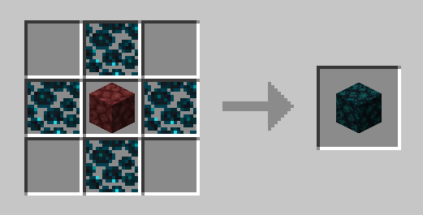
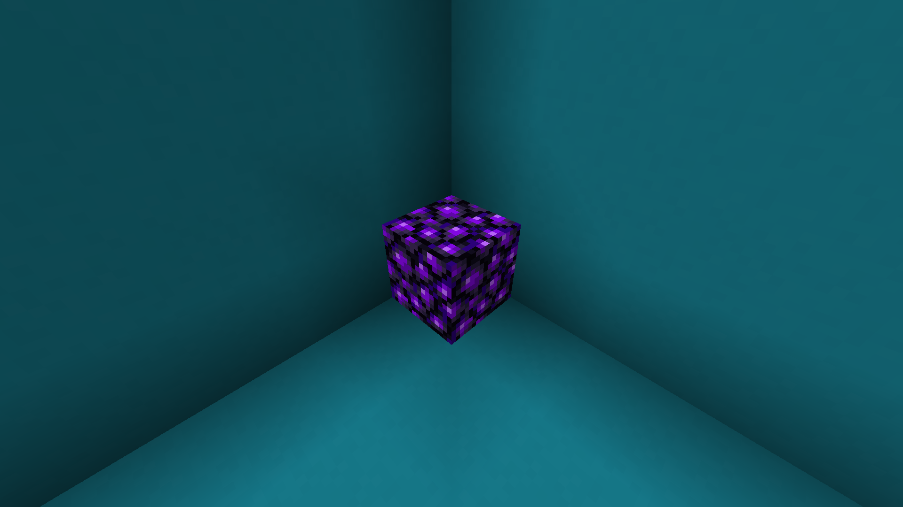
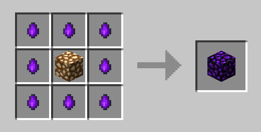

Home
Images
Wiki
Donate
Wiki
Sculk Nether:
Sculk Netherrack:

Sculk Nether Bricks:
Cracked Sculk Nether Bricks:
Chisedel Sculk Nether Bricks:
Sculk Shroomlight:
Sculk Nether Brick:
Obsidian Blocks:
Crying Glowstone:
 
Obsidian Tear: